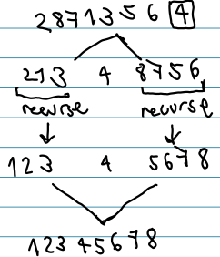

algorithm:
divide input array into two parts:
up to index q, keys ≤ pivot
starting at index q+1, keys ≥ pivot
sort recursively both sub-arrays
combine two sub-arrays into one sorted array

partitioning (in O(n))
while list contains more than 1 element:
take x from list (pivot)
index i is last key of small-ones-so-far
index j is first key to be compared to pivot
if j finds key smaller than pivot, swap that key with i+1
Worst-case time: ϴ(n
2
)
Best-case time: ϴ(nlogn)
Average-case: ϴ(nlogn)